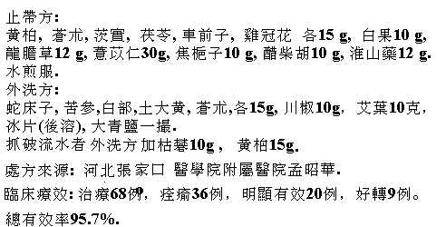

Chinese Herb Formulae for yeast infections
note: for Latin scientific names of herbs, see Chinese herb dictionary.
Formula 1
huang bo 15 g, cang zhu 15 g, ci shi 15 g, bai guo 10 g, fu ling 15 g,
long dan cao 12 g, che qian zi 15 g, ji guan hua 15 g, yi yi ren 30 g,
jiao zhi zi 10 g, cu chai hu 10 g, huai shan yao 12 g
Make into one prescription; boil herbs with water; use as tea. Take one prescription a day. Fifteen prescriptions is one treatment.
Formula for washing infected area:
she chuang zi 15 g, ku shen 15 g, bai bu 15 g, tu da huang 15 g, cang zhu 15 g,
chuan jiao 10 g, ai ye 10 g, bing pian 1 g (Put in after all other herbs have been boiled for 15 to 20
minutes.) Add da qing yan 30 g
If scratch wounds appear, boil ku fan 10 g and huang bo 15 g for use as external bath.
Source of formulae: Meng Zao Hua, Chang Jia Ko Hospital of Chang Jia Ko Medical School, He Bei, China.
Effectiveness: Total patients:68; healed: 36; highly effective:20; got better 9; total effectiveness 95.7%.
